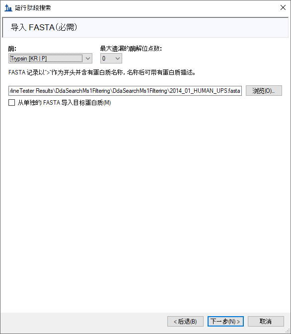
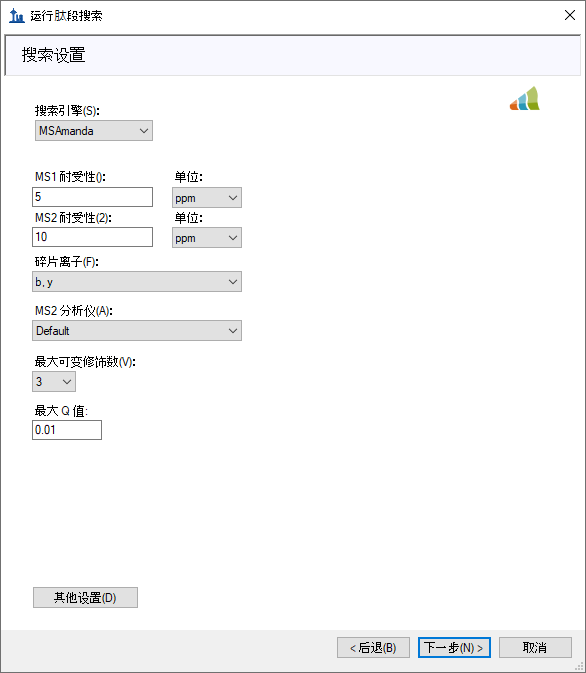
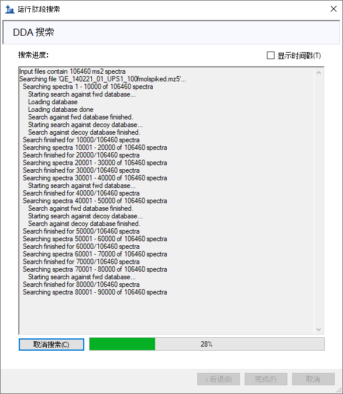
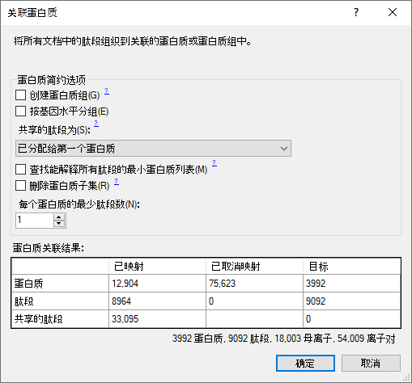
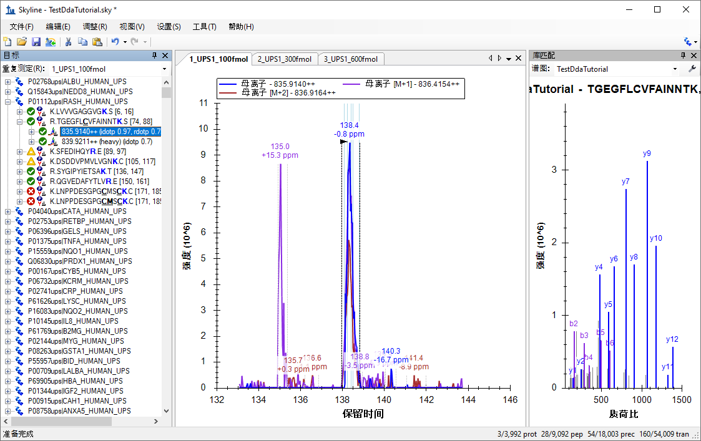
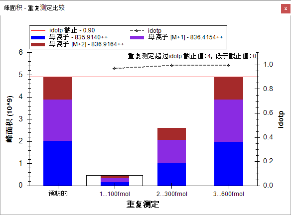
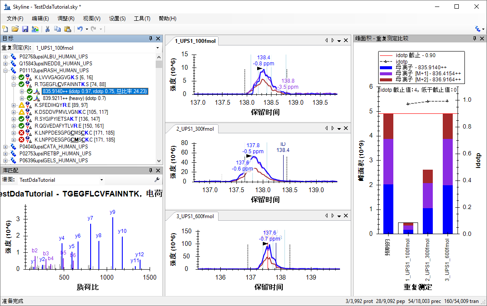

Skyline 靶向质谱环境能直观呈现导入 Skyline 文档的原始质谱仪数据信息。借助这些可视化功能，您可以执行各种操作，如优化所测肽段和离子对以及调整整合边界等来对数据加以处理。最初开发 Skyline 的目的是利用选择反应监测（简称 SRM，亦称为多反应监测（简称 MRM））质谱进行定量分析，现在它的应用范围已经扩大到从数据依赖型串联质谱所获得的质谱数据的 MS1 谱图中去提取时间-强度色谱峰来用于肽段定量实验。
Skyline MS1 全扫描筛选支持导入探索性蛋白质组学实验中使用数据依赖采集 (DDA) 模式获得的数据集。导入原始数据后，使用 Skyline 新开发的和原有的功能可以协助定量测量来自于多次重复测定采集的肽段母离子 MS1 信号。鉴于 Skyline 出色的数据可视化图，这种模式也可用于可视化以及更好地理解来自于其它“非标记”定量工具的定量结果。
本教程将介绍以下几个重要方面，在您想要使用 Skyline 来对 DDA 数据中的 MS/MS 谱图进行肽段谱图匹配时，这几个方面对有效利用 Skyline MS1 筛选至关重要：
Skyline 旨在为靶向蛋白质谱研究提供一种独立于供应商的平台。它可以导入来自于供应商 Agilent、Bruker、SCIEX、Shimadzu、Thermo-Scientific 和 Waters 的原始数据用于 MS1 筛选，这样一来，您就可以将在Skyline获得的专业知识转移到任何一家有着以上供应商质谱仪的质谱实验室。
要开始本教程，请下载下列 ZIP 文件：
https://skyline.ms/tutorials/DdaSearchMS1Filtering.zip
将文件解压到您电脑上的某个文件夹，比如：
C:\Users\brendanx\Documents
该操作将创建一个新文件夹：
C:\Users\brendanx\Documents\DdaSearchMS1Filtering
如果您在开始学习本教程之前就一直在用 Skyline，最好将 Skyline 恢复为默认设置。要恢复默认设置：

该 Skyline 实例中的文档设置现已重置为默认值。
由于本教程涵盖蛋白质组学主题，因此您可以执行以下操作来选择蛋白质组学界面：

Skyline 将在蛋白质组学模式下运行，Skyline 窗口的右上角  随之显示蛋白质图标。
随之显示蛋白质图标。
您可以用多种方法开始编辑空白文档，但在本教程中，您将使用一组按序排列的表单（即“向导”），它将引导您逐步经历几个步骤：搜索质谱仪数据依赖采集 (DDA) 数据文件、设置目标以及导入这些文件中的色谱图。
在开始 DDA 搜索之前，需要更改 Skyline 默认使用的内部标准。
“肽段设置”表单现在应如下所示：

您可以使用导入肽段搜索向导，对 DDA 数据文件中的 MS/MS 谱图进行肽段搜索。
首先执行以下操作以保存您的新文档：
现在按下面的指示启动导入肽段搜索向导：
Skyline 将呈现如下所示的表单：

构建选项适用于 DDA 搜索引擎的输出（如 Comet 的 pepXML 文件，Mascot 的 .dat 文件），执行 DDA 搜索选项适用于原始数据（如 RAW、WIFF、*.d、mzML、mzXML）。本教程中的 mz5 文件为质心数据，目的是提供比质谱仪产生的原始 Thermo RAW 文件更快的下载速度。
执行以下操作，将所包含的 DDA mz5 文件添加到搜索中：
此时向导表单将显示如下：

此时将显示一个表单，询问您如何处理这三个 mz5 文件的共有前缀：

向导继续前进至添加修饰页面，其中列出了此文档中您可能希望包含在 DDA 搜索中的所有氨基酸修饰。这里务必区分固定修饰和可变修饰：固定修饰（有时称为静态修饰）总是应用于指定的氨基酸。例如，Carbamidomethyl C 通常视为固定修饰，因为数据中的所有半胱氨酸都会烷基化。Oxidation M 几乎总是视为可变修饰，因为氧化或则命中，或则不命中，具体取决于样品的处理。Skyline 搜索时总是将同位素标签作为变量处理，但是您可以单击编辑修饰按钮，来更改其它修饰是作为固定修饰还是可变修饰。
您也可以从本页面向文档中添加修饰。由于此文档被重置为默认值，所以列表中只以 Carbamidomethyl (C) 开始：

这些数据有 SILAC 标签，这里需要添加重标签修饰。添加步骤如下：
此时编辑同位素修饰表单应显示如下：

执行以下步骤以添加第二个同位素修饰：
自动选中 13C 和 15N 复选框，以告知 Skyline 对精氨酸分子中的所有碳原子使用 13C，对所有氮原子使用 15N，总质量偏移为 10 Da (6x 13C + 4x 15N)。
此时编辑同位素修饰表单应显示如下：

Skyline 自动计算单一同位素质量和平均质量偏移，如图，赖氨酸 (K) 质量偏移约为 8 Da，精氨酸 (R) 约为 10 Da，这是由于在这些氨基酸残基中使用了 13 C 和 15 N。要完成添加重修饰：
现在您将添加 Oxidation (M) 作为结构修饰：
这时的添加修饰页面应如下所示：

向导将前进至配置全扫描设置页面。
本页面中的其它字段应默认为可用于本教程的值，向导显示如下：

随即会进入导入 FASTA 页面。在本教程中，您将使用人类蛋白质 FASTA，并且来自 Sigma-Aldrich 的通用蛋白质组学标准 (UPS) 序列附加在顶部（这样 Skyline 就会对 UPS 和非 UPS 蛋白质之间共有的任何肽段使用这些检索号）。要选择 FASTA：
此时向导将显示如下：

向导将前进至调整搜索设置页面。在这里您可以为 DDA 搜索设置最重要的参数。对于本教程，请执行以下操作：
该表单现在应显示如下：

DDA 搜索页面将显示搜索进度。您也可以单击该页面的取消搜索按钮来取消搜索。

搜索结束后：
Skyline 将开始根据搜索结果构建谱图库。完成谱图库构建后，将弹出一个消息框，提醒您有些谱图可能被解读为多个置信水平相同的不同肽段，并且这些肽段将被忽略：
然后 Skyline 开始将该库导入您的文档。导入完成后，会提示您设置此文档中包含蛋白质的条件：

蛋白质导入文档后，您会看到 Skyline 主窗口，其中目标视图的顶部为 UPS 蛋白质。您应当会看到那里有 6,025 个蛋白质（在状态栏中计数）。Skyline 也将开始提取色谱图，并在导入结果表单中显示进度。您可以等待几分钟直至色谱图提取完成，或者在导入期间继续执行最后一步除外的所有步骤。
Skyline 窗口应显示如下：

现在文档已通过所导入的三项 DDA 运行完成了 MS1 筛选的全部配置。由于在导入向导中选择了仅使用 MS/MS ID 5 分钟之内的扫描设置，本视图中的色谱图长度约为 10 分钟（133 至 143 分钟）。请注意，在为 MS1 筛选进行 Skyline 文档设置时，您将在由三重四级杆 SRM 实验所产生的子离子离子对（例如 y-离子）的地方，看到不同的母离子同位素峰值，例如对于肽段 TGEGFLCVFAINNTK，会显示这些母离子同位素峰值：母离子 – 835.914++、母离子 [M+1] - 836.4154++ 和母离子 [M+2] – 836.9164++。
要配置一些在一般情况下有用的其它功能，尤其是可视化某些 MS1 筛选数据，请执行下列步骤：
这样的操作会告知 Skyline 将一个峰组内的所有色谱图（此处为母离子 M、M+1 和 M+2）整合在一起，无论这些峰是否看起来与其中的最大峰共洗脱。它不再像以前那样影响整合的峰面积。
此时应当会出现一个包含下图的窗口：

您可以通过下列操作将峰面积窗口停靠在您需要的位置：
现在 Skyline 窗口应显示如下：

此后您可以查阅 MS1 全扫描筛选教程，来了解有关 DDA 数据处理的更多信息。